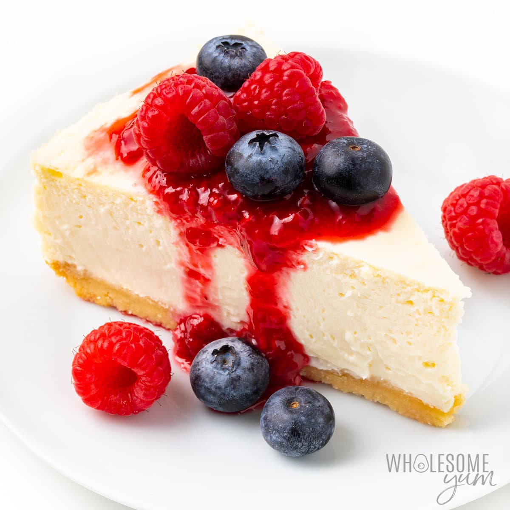

Recipe for Cheesecake

Description
Cheesecake is a delectable dessert that has become a staple in many cuisines around the world. Known for its
rich, creamy texture and irresistible flavor, cheesecake is a beloved treat that satisfies sweet cravings and
delights taste buds. This dessert typically consists of a thick, velvety filling made from cream cheese, eggs,
sugar, and flavorings, all nestled on a buttery graham cracker crust.
The crust, often made from a mixture of graham cracker crumbs and melted butter, provides a delightful contrast
to the smoothness of the cheesecake filling. Once baked to perfection, the cheesecake is commonly
Ingredients
- 2 cups graham cracker crumbs
- 1/2 cup unsalted butter, melted
- 1 1/2 cups cream cheese, softened
- 1 cup granulated sugar
- 3 large eggs
- 1 teaspoon vanilla extract
- 1 cup sour cream
- 1/4 cup all-purpose flour
- 1/4 teaspoon salt
- Optional toppings: fruit compote, chocolate ganache, whipped cream
Recipe
- Preheat the oven to 325°F (160°C) and grease a 9-inch springform pan.
- In a bowl, combine 2 cups graham cracker crumbs and 1/2 cup melted unsalted butter until the crumbs are evenly coated.
- Press the crumb mixture firmly into the bottom of the prepared pan to create the crust.
- In a large mixing bowl, beat 1 1/2 cups softened cream cheese until smooth and creamy.
- Add 1 cup granulated sugar and continue beating until the mixture is well combined.
- Beat in 3 large eggs, one at a time, making sure to mix well after each addition.
- Stir in 1 teaspoon vanilla extract and 1/4 cup all-purpose flour until the batter is smooth.
- Gradually add 1 cup sour cream to the batter and mix until incorporated.
- Pour the batter over the prepared crust in the pan.
- Bake in the preheated oven for 45-50 minutes, or until the edges are set but the center still has a slight jiggle.
- Turn off the oven and leave the cheesecake inside for an additional 1 hour to cool gradually.
- Remove the cheesecake from the oven and refrigerate it for at least 4 hours, preferably overnight.
- Once chilled, carefully remove the cheesecake from the springform pan.
- For serving, you can top the cheesecake with fruit compote, chocolate ganache, or whipped cream.
- Slice and enjoy the rich and creamy goodness of homemade cheesecake!